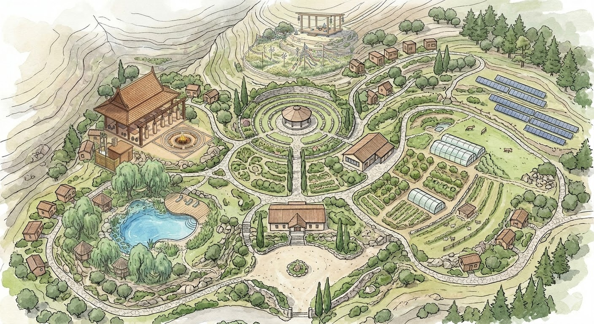
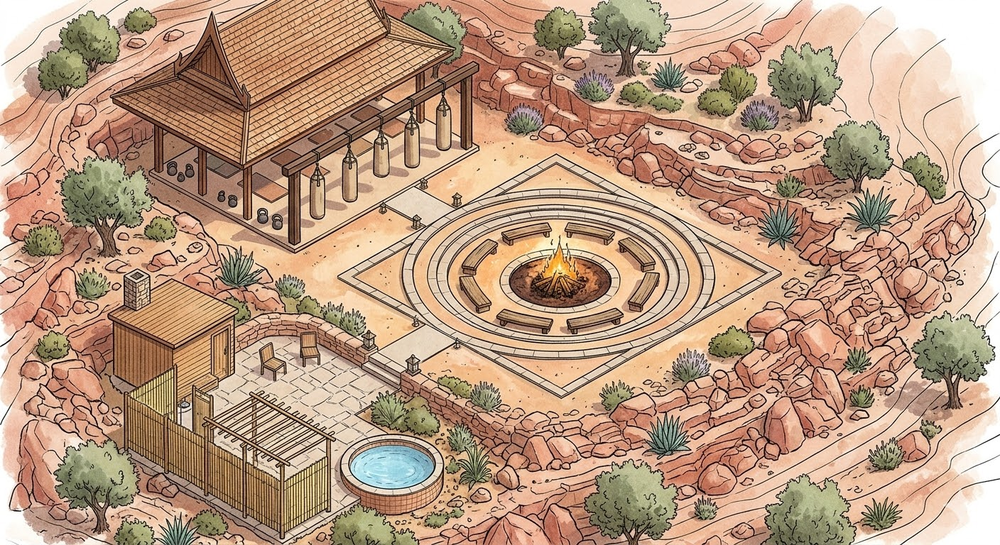
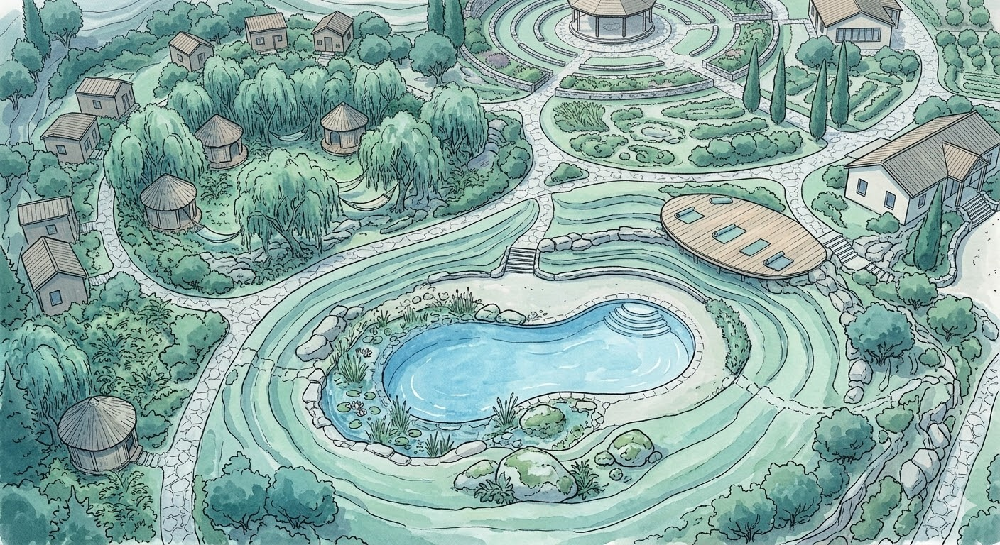
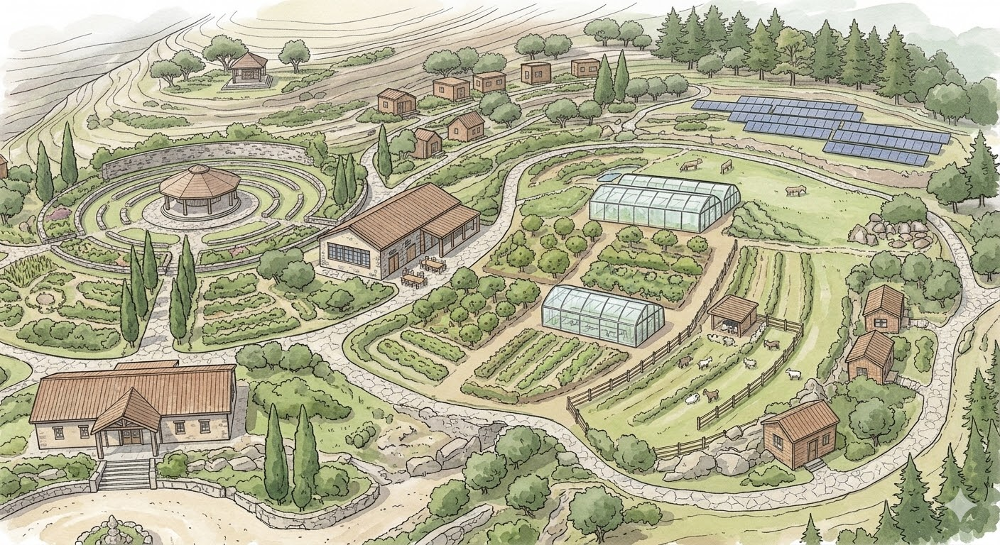
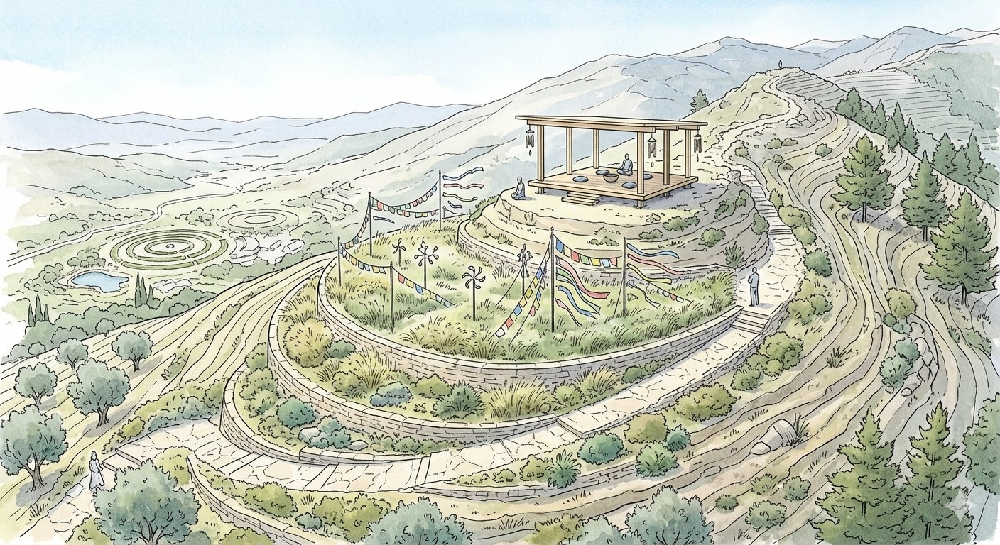

This page presents a long-term spatial vision for Elemental Discovery — a place where the principles of balance, practice, and connection to the land take physical form. It is not a finished blueprint, but a direction: a way of imagining how a community rooted in elemental awareness might actually live.
Spirit is not a separate zone — it is what holds the whole vision together. It is the orienting principle that gives coherence to the different areas, connects the parts to each other, and keeps the village grounded in its deeper purpose. You can see it in the image below: not as one location, but as the relationship between all of them. Without this quality at the centre, the elements would be separate projects. With it, they become a single living place.


The Fire Zone is where disciplined energy meets communal warmth. It holds spaces for martial practice, physical challenge, and the kind of transformation that comes from sustained effort. A central fire pit anchors the area — a place for gathering, storytelling, and the quiet courage that grows when people face difficulty together and stay present through it.

The Water Zone is shaped around restoration and softness. Natural pools, flowing water, and shaded retreats offer a place to slow the nervous system, process emotion, and remember what stillness feels like. It is designed for immersion — not performance — where the body can settle and the inner current can move at its own pace.

The Earth Zone is where food grows and hands meet soil. It holds gardens, growing spaces, and simple structures for preparing and sharing what the land provides. This is the most tangible part of the village — rooted in stewardship, sustainability, and the quiet discipline of working with the seasons rather than against them.

The Air Zone sits higher in the landscape, offering perspective and spaciousness. It is a place for meditation, reflection, and the kind of clarity that comes from stepping back. Open platforms, elevated walkways, and quiet corners invite the mind to settle and the view to widen — a reminder that sometimes the most useful thing is simply to see from above.
The images and descriptions on this page represent a direction, not a fixed promise. The village is a long-term intention that will evolve as the land, the community, and the resources allow. What will not change are the principles at the core: balance, honesty, care for the body and the earth, and a commitment to building something real.